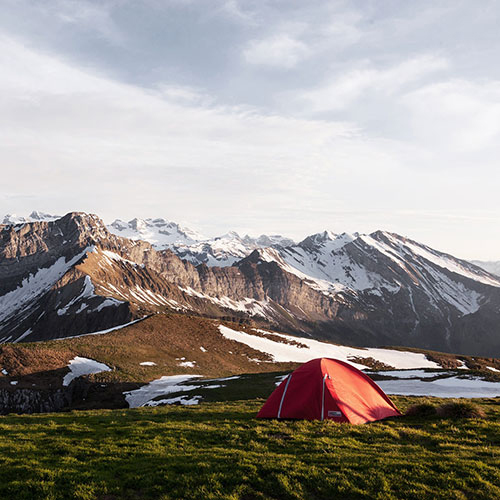

Our Adventures
From gentle scenic floats to heart-pounding whitewater, Dry Oar has a trip for every kind of adventurer. Take a look at what's waiting downstream.

Scenic River Floats
Perfect for families and first-timers. Drift through quiet canyons and forested valleys on a relaxed half-day float, with plenty of stops to swim and take in the view. No experience required — just bring your sense of wonder.

Whitewater Rapids
For thrill-seekers ready to get soaked. Our guided rapids runs take on Class III–IV water with expert guides who keep the adrenaline high and the crew safe. Paddle hard, hang on, and celebrate at the takeout.

Overnight Camping Trips
Turn a day on the water into a weekend to remember. Multi-day expeditions pair full days of rafting with riverside camping, campfire dinners, and star-filled skies far from the city lights.
| Trip | Duration | Difficulty | Price |
|---|---|---|---|
| Scenic River Float | Half day | Easy | $65 |
| Whitewater Rapids | Full day | Advanced | $120 |
| Overnight Expedition | 2 days | Intermediate | $295 |
Ready to pick your adventure? Contact us to book your spot.